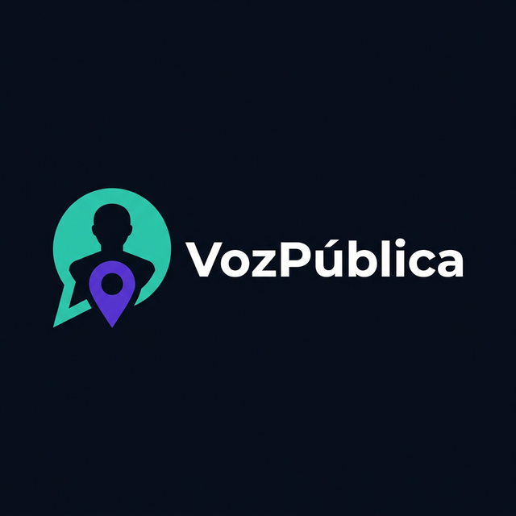

💡 Linguagem simples · detecta CEP automaticamente
Enter enviar · Shift+Enter nova linha

VozPública Assistente de Direitos e Serviços PúblicosDigite ou fale sua dúvida. A IA responde em linguagem simples, sem burocracia.
Clique em "Analisar Documento" e envie uma foto de um documento oficial para explicação simples.
Use "Perto de Mim" para localizar CRAS, UBS e hospitais por GPS ou CEP.
Conversas são salvas automaticamente. Acesse qualquer conversa pelo menu lateral.
O VozPública é um assistente de IA criado para democratizar o acesso a informações sobre direitos e serviços públicos no Brasil.
v2.0 — Histórico persistente, geolocalização de serviços, busca por CEP e dashboard expandido.
Use sua localização ou informe um CEP para encontrar unidades de saúde e assistência social perto de você.
ou busque pelo CEP:
Aguarde um momento
Verifique as permissões do navegador.
Estou aqui para te ajudar a entender seus direitos, acessar serviços públicos e navegar a burocracia brasileira.
Arraste uma foto de documento governamental aqui
ou clique para selecionar · JPG, PNG, WebP, PDF · máx 10MB